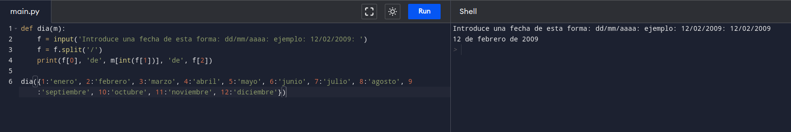

Escribir un programa que pregunte una fecha en formato dd/mm/aaaa y muestre por pantalla la misma fecha en formato dd de "mes" de aaaa donde "mes" es el nombre del mes.
def dia(m):
f = input('Introduce una fecha de esta forma: dd/mm/aaaa: ejemplo: 12/02/2009: ')
f = f.split('/')
print(f[0], 'de', m[int(f[1])], 'de', f[2])
dia({1:'enero', 2:'febrero', 3:'marzo', 4:'abril', 5:'mayo', 6:'junio', 7:'julio', 8:'agosto', 9:'septiembre', 10:'octubre', 11:'noviembre', 12:'diciembre'})

back